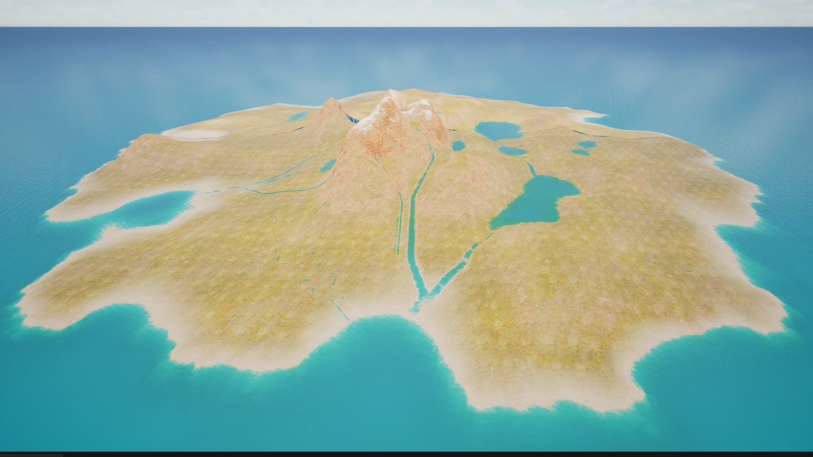
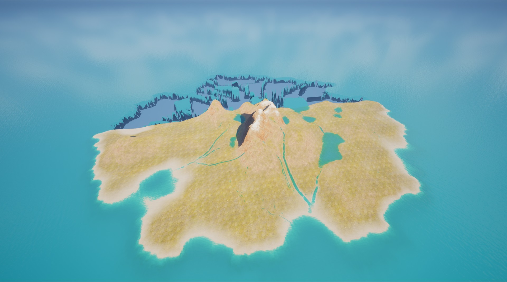
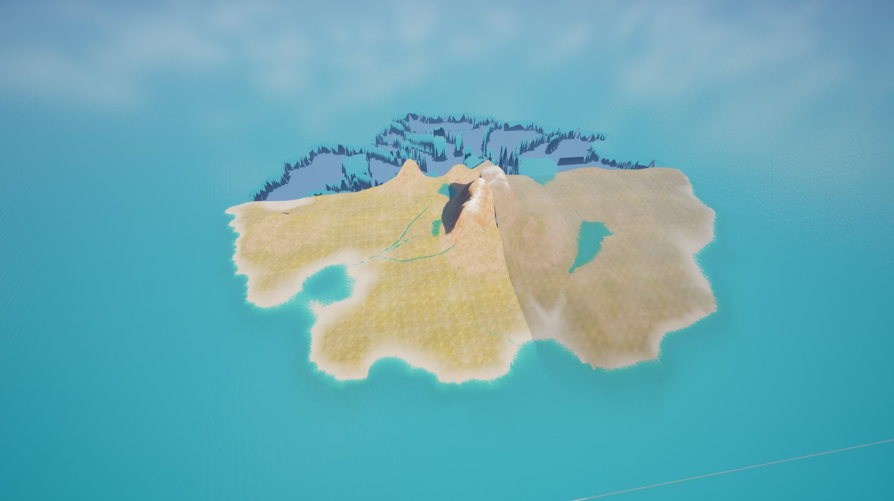
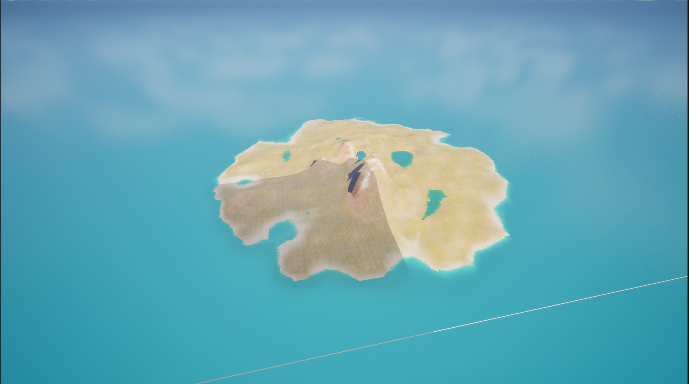

Image pending capture
Before
Image pending capture
After — one click
A few days ago I did the thing this whole project has been building toward: I loaded a fresh, unmodified copy of Unreal's Open World template — the map that ships free with the engine — clicked Generate once, and got back an ocean, eleven lakes and 84 rivers, fully dressed. Shore materials, wave behaviour, all of it. Zero manual steps afterwards. The pair above is that exact map: before the click, and after it. If you work in UE5, this exact terrain is probably sitting on your machine right now.
That moment is why this devlog exists, so let me introduce things properly.
I'm Matt, a solo developer in the UK, and Pyraxis Entertainment is my studio. Geomancer is its first product: a worldbuilding toolkit for Unreal Engine 5, starting with water that actually understands terrain. The pitch fits in one sentence — give it any terrain, and it gives you back a world that looks real.
This is a dated log. Figures reported here were verified on DATE PENDING and describe the build as it stood that day.
What it does today
Everything below is working now, in the current build — not roadmap.
- One click generates the water for whatever landscape you give it. The whole setup, honestly: drop the tool's placer into the level, click yes on the engine's standard one-time water prompt, hit Generate. Ocean, lakes and rivers come out placed from the terrain's own shape — no splines to draw, no basins to hunt for by hand.
- Rivers follow the real drainage. They rise where water would actually gather, merge where valleys meet, and every one of them ends somewhere real: the sea, a lake, or another river. No dead-ends in open ground.
- Closed basins hold water. An inland depression with no outlet becomes an inland sea or a wetland — not a dry pit with rivers mysteriously vanishing into it. And shallow pans that rivers feed stay wet: where several rivers converge, there's water waiting for them. On the stock template this produced my favourite find of the week: the tool worked out that the big central basin sits a single centimetre below sea level — so it now holds what might be the world's shallowest inland sea, and four river-fed pans came back as wetlands.
Image pending capture
- It arrives dressed. Shore materials, wave behaviour, buoyancy-ready water bodies — real engine water, not a visual shell. The proof is the map above: a stock template, straight out of the box, and nothing was touched up afterwards.
- It holds up at any distance. Fly from the shoreline to the stratosphere and the world stays whole — near detail up close, simplified detail far away, nothing missing.
- It's repeatable. Generate twice on the same terrain and you get the same world, down to the log output. My test island — the map this tool grew up on, a different one from the opening shot — settles at 1 ocean, 16 lakes and 38 rivers, with zero warnings.

One honest footnote on that image: the terrain textures are a studio material, placed by slope and height — Geomancer's job today is the water. Teaching it to dress the land the same way is exactly where this is heading.
The bug hunt that earned this post
One promise for these devlogs: the mess gets posted alongside the wins. So here's the part where it went wrong.
After the one-click win I did the thing you should always do after a win: fly further than you've ever flown. At extreme range, the distant water baked into opaque grey plates — and past a certain distance, half the island stopped existing entirely. Two brand-new bugs, from territory I'd never tested.


A day later, both were fixed: distant scenery no longer tries to bake live water into itself, and the farthest detail tier now persists at any range — just simpler. The island is complete from any altitude.

The lesson that keeps proving itself: you only find what you fly. Every time I test at an altitude, a distance, or a map I've never tried, something new falls out. That's not a reason to dread testing — it's the reason to do more of it.
What's next
Biomes. The same terrain intelligence that places water will start deciding what the land itself is made of — and water was deliberately the hard proof-of-concept first. No dates on any of this: I'm building it right rather than fast, and Geomancer will land on Fab when it's ready.
Follow along
This is the first public devlog of a much longer road — Pyraxis is one person right now, building toward something much bigger. If terrain tools are your thing, I'd like your worst war story: what does water always get wrong in your maps? The answers genuinely shape what I build next.
Reply to me on X or Bluesky, or email contact@pyraxisentertainment.com. I read everything.